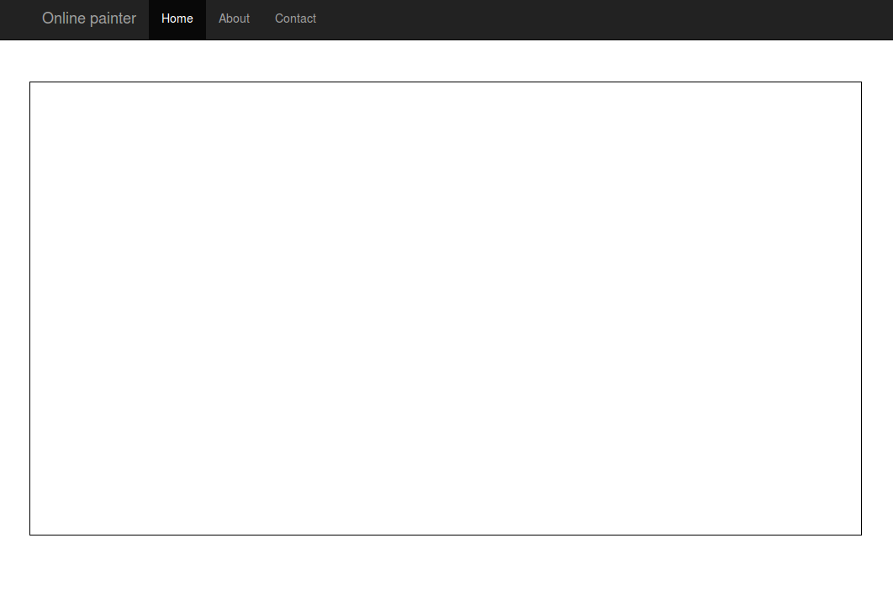

introduction to Javascript via
© Theodoros Papatheodorou
why via p5.js?
we love Processing
Processing.py
p5.js
hello p5.js!
watch this video
What is p5.js?
- uses Processing as a paradigm, but not limited to the canvas
- make coding accessible for artists, designers, educators, and beginners—and reinterprets this for today's web.
- helps you understand relationship between html, css, Javascript
similarities to Processing
differences to Processing
- createCanvas() vs. size()
- var vs. other types
- all function take the word "function" before their name
- arrays are declared slightly differently
- not everything in Processing has been implemented (3D, PShape, PFont)
- we inherit all the Javascript stuff
First sketch & using the library
- from a local file
- from the net (using CDN)
p5js_101
Placing the canvas on the page
all elements are added at the bottom of the other elements of the html unless:
- you use the position() function for that element (treats position as absolute)
- you use CSS rules to define where it should be placed (better)
p5js_positioning / p5js_positioning_advanced
help & reference
p5.js has a great site
exercise 1
Picasso online

- discuss APIs
- show sheep market
Beyond the canvas with p5.js
- One of the core ideas behind p5.js is that your sketch is not just the graphics canvas but the whole web page in your browser.
- the p5.dom library that makes it easy to interact with other HTML5 objects
- helps you understand relationship between html, css, Javascript
- we include that library like any sketch
Elements on page vs. canvas
- When drawing in canvas while the loop is running, you need to redraw everything in the scene every frame.
- when working with elements, they hold a static state that you can change at any time by calling one of their methods
modifyingElements
Elements vs. canvas positioning
html elements we define via the p5.dom library will go after the canvas unless:
- we specify an absolute position with the "position()" function
- use ids/classes and specify CSS rules
help & reference
p5.js has a great site